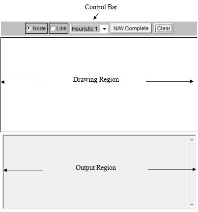
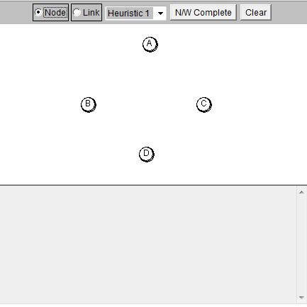
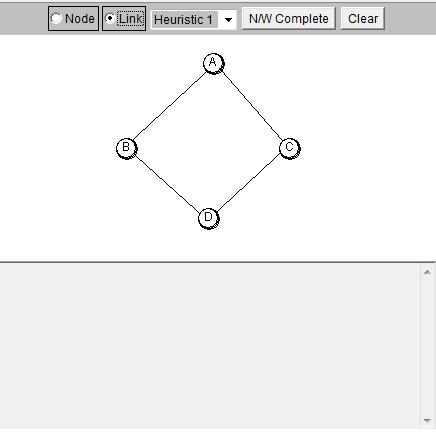
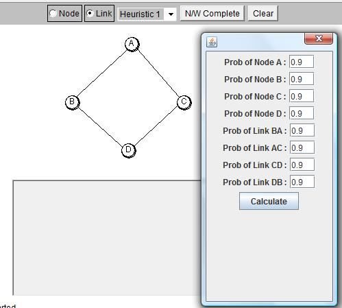

|
Entering Inputs
1. Click the mouse in the drawing region to place nodes.(Fig 2)
2. Select "Link" from the control bar and connect the Nodes by clicking the mouse on one node, dragging to the other node and releasing the mouse button. (Fig 3)
3. Select the heuristic algorithm from the dropdown menu.
4. When the network diagram is complete press the N/W Complete button.
5. In the popup box, Enter the probability of the nodes and the corresponding links.(Fig 4)
6. After entering all the probability values, Press the Calculate button .
Interpretation of output values
r - read quorum vote
w - write quorum vote
Rd Quorum - Read quorum for the corresponding read vote
Wr Quorum - Write quorum for the corresponding write vote
Sys Availability - System Availability for the read and write quorum
---A Word of Caution----
Once your network is complete in the drawing region and when you press the N/W complete button
A pop up window will appear with default values for all the Node and Link probabilities as 0.99.
If you are modifying the values, make sure that you dont provide 0 or 1. Anything in between is fine.
If for some reason you dont find the simulator output try restarting it through the clear button or try refreshing the page.
Dont be alarmed if you notice the output region filled with chain of alphabets separated by comma.
The output will not appear formatted if the number of nodes increases and you will have to interpret the values using the corresponding column heading
|
|

|
| Fig 1. Simulator Environment |
|

|
| Fig 2. Placing Network Nodes |
|

|
| Fig 3. Placing Network Links |
|

|
| Fig 4. Entering Node and Link Probabilities |
|